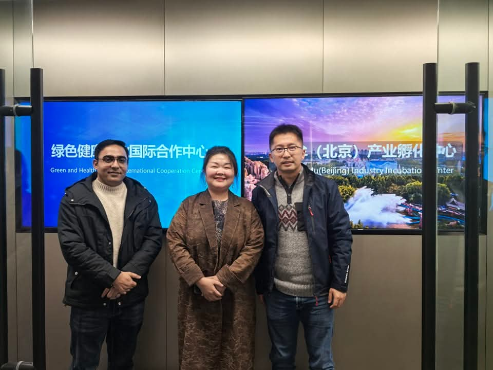

HEALTH ECONOMIST & DATA SCIENTIST
Muhammad Shahid
Shenzhen University
Expert in Applied Health Economics, Machine Learning and Explainable AI. Solving complex health policy problems with data-driven insights.
Contact Me-
Explainable AI (XAI)
SHAP, LIME and Partial dependence plots for model interpretability.
-
Deep Learning
Bayesian Neural Networks, DNN and Neural Additive Models.
-
Advanced Econometrics
Casual interference, IV, DiD and panel data methods.
-
Programming
Python (TensorFlow, PyTorch), R and STATA.
About Us

 About Me
About Me
Professional BackgroundSummary
Dr. M. Shahid is a highly accomplished Health Economist and Data Scientist with a PhD in Economics, specializing in Finance, Insurance, and Health Policy from the University of International Business and Economics, Beijing, China. He is an Expert in leveraging applied health econometrics, machine learning, Explainable AI, and deep learning to solve complex problems in maternal/child health, environmental health, health insurance, and health policy. He has a strong publication record with numerous leading journals' publications, and a unique background combining high-level academic research as an Associate researcher (Tsinghua, Peking Universities) and around 5 years of practical experience as a Data Analyst/Consultant at the WHO. Currently focused on developing and integrating innovative hybrid AI and deep learning models for conditional dependencies and precise risk factor identification and prediction.
-
Deep Learning
-
Information Technology
-
R (Programming Language)
-
Healthcare
-
Microsoft Office
 Academic Journey
Academic Journey
Educational Milestones
PhD in Economics
Major in Finance & Insurance
University of International Business & Economics (UIBE), Beijing
Thesis: Impact of Health Insurance on Nutritional Outcome of Children in Pakistan: A Deep
Learning-Bayesian Neural Network Based Assessment.
M. Shahid | Health economist
Pakistan Institute of Development Economics (PIDE), Islamabad
Masters in Economics
Islamia University of Bahawalpur (IUB), Pakistan
1000+ Google Scholar Citations | h-index : 17 | 50 Publications
See Scholar
 Global Impact
Global Impact
Institutional Collaborations
-
World Health Organization
Data Management & Analyst
Providing data-driven insights and health policy consultancy across regional WHO hubs.
-
Shenzhen University
Associate Researcher
Current affiliation at the College of Management, focusing on high-level economic research.
-
Tsinghua University
Associate Researcher
Conducted research at the Vanke School of Public Health, one of China's top institutions.
-
Peking University
Research Assistant
Collaborated with the Department of Health Policy & Management on large-scale health studies.
 What I Do
What I Do
Advanced Analytics and Specialized Skills
-
Health Ensurance Consulting
Expert advice on health financing, policy evaluation & health systems to ensure sustainable health coverage.
-
Data Analytics
Leveraging machine learning and economic model to derive actionable insights from complex health and consumer data.
-
Predictive Modeling
Developing Bayesian Neural Networks and Explainable AI (SHAP) models for precise risk and outcome prediction.
-
Policy Evaluation
Evaluating public health interventions, SDGs and child nutrition programs to drive sustainable policy development.
-
Technical Writing
High-quality academic & technical writing services tailoned for prestigious medical & health economics journals.
-
Research & Editing
Comprehensive editing and peer-review preparation to elevate the impact and clarity of scientific publications.
 Key Contributions
Key Contributions

Research Insights & Projects
-
Case Study
Child Malnutrition Research (Punjab, Pakistan)
Extensive research on socio-economic correlates of malnutrition among pre-school children, focusing on marginalized districts in Punjab.
-
Evaluation
Health Insurance Evaluation (Sehat Sahulat Program)
Assessing the welfare gains and child health impacts of Pakistan’s flagship health insurance program using advanced econometric models.
-
Environmental
Environmental Health & Water Insecurity
Analyzing the gender and nutritional consequences of water insecurity and the impact of sanitation facilities on child health.
-
Innovation
Explainable AI & Deep Learning in Healthcare
Developing hybrid AI and deep learning models (BNN) to identify risk factors and improve predictive precision in complex healthcare systems.
 Academic Vision
Academic Vision
Research Vision & Impact
"My mission is to bridge the gap between advanced econometrics and artificial intelligence to create sustainable, data-driven health policies. By understanding the causal drivers of child health, we can build a more equitable future for all."
Dr. Muhammad Shahid
PhD in Economics / Associate Researcher



 Publications/Articles
Publications/Articles

Research Publications & Insights
-
D Liu, XL Feng, F Ahmed, M Shahid, J Guo
Detecting and measuring depression on social media using a machine learning approach: systematic review
View Publication -
C Liu, D Liu, N Huang, M Fu, JF Ahmed, Y Zhang, X Wang, Y Wang, ...
The combined impact of gender and age on post-traumatic stress symptoms, depression, and insomnia during COVID-19 outbreak in China
View Publication -
M Shahid, Y Cao, F Ahmed, S Raza, J Guo, NI Malik, U Rauf, MG Qureshi, ...
Does mothers' awareness of health and nutrition matter? a case study of child malnutrition in marginalized rural community of Punjab, Pakistan
View Publication -
J Saha, P Chouhan, F Ahmed, T Ghosh, S Mondal, M Shahid, S Fatima, ...
Overweight/obesity prevalence among under-five children and risk factors in India: a cross-sectional study using the national family health survey (2015–2016)
View Publication -
M Shahid, F Ahmed, W Ameer, J Guo, S Raza, S Fatima, MG Qureshi
Prevalence of child malnutrition and household socioeconomic deprivation: A case study of marginalized district in Punjab, Pakistan
View Publication
 Educational Impact
Educational Impact
Software & Courses Hub
Democratizing data science through technical tutorials on STATA, Econometrics, and Bayesian Neural Networks. Shared with a global community of researchers and students.
Visit YouTube ChannelOpen Science Initiative
My channel provides step-by-step guidance on complex economic modeling, ensuring that advanced analytical methods are accessible to the next generation of health economists.
 Recognition & Contribution
Recognition & Contribution
Awards & Academic Service
Journal Peer Reviewer
Committed to academic rigor as a reviewer for prestigious journals including BMC Public Health, PLOS ONE, and the Frontiers research series.
CSC Scholarship
Selected for the prestigious Chinese Government Scholarship for doctoral research at the University of International Business and Economics.
Research Excellence
Maintains a high-impact research output with 1000+ citations and a steady record of Q1/Q2 SSCI/SCI publications.